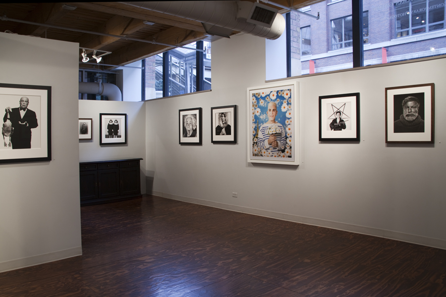
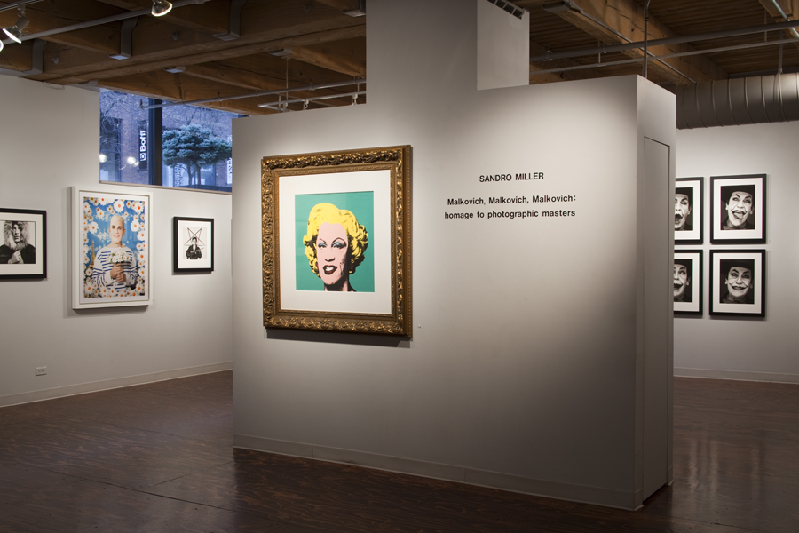

The story behind Sandro Miller's new photo exhibit,"Malkovich, Malkovich,Malkovich," which opens this weekend at the Catherine Edelman Gallery, begins 17 years ago when Miller first met John Malkovich at the Steppenwolf Theatre, where Malkovich, a founding member of the company, was appearing in The Libertine and Miller was taking promotional photos. The two hit it off. In time, Malkovich would consider Miller his favorite photographer, and Miller would consider the actor his favorite subject. Malkovich proved just as expressive in front of Miller's camera as he was onstage or on-screen. "I can push interesting buttons with John, and he will go there," Miller says. "I don't have that kind of connection with anyone else."  So when Miller, who is self-taught, decided to pay homage to some of his favorite photographers by re-creating their most iconic shots, there was no question who he would use as his subject. He flew to the south of France, where Malkovich lives, to pitch the idea; he was afraid some nuances would get lost over e-mail. He needn't have worried: the actor loved it.
 Miller re-created 38 images from a wide variety of photographers, ranging from Irving Penn to Andy Warhol to Annie Leibovitz. He obsessed over details, including lighting, wardrobe, hair and makeup, and, in the case of Richard Avedon's Ronald Fisher, Beekeeper, Davis, California, May 9, the positioning of the correct number of (dead) bees on Malkovich's face and body. "If I can't put the photo next to the original," Miller says, "if it doesn't have the same impact, I've failed." Malkovich flew to Chicago for two separate shoots, each lasting several days. Sometimes he would do his own hair and makeup. "John would study the photos for a few minutes," says gallerist Catherine Edelman, "and in a few seconds, he would morph into the character." He was fearless, Miller says, unafraid of being photographed naked or as a woman or even as Diane Arbus's creepy twin girls.mark "If you had told me a year ago that he would appear as Marilyn Monroe three different times, I would have said, 'Right.' But John Malkovich is the most confident man in the world."
Each photograph will be printed and framed in the same style as the original, although Miller used a digital camera instead of film. (It was just too difficult to use replicas of old cameras.) At Expo Chicago in September, Edelman displayed three finished pieces in her booth and a binder with small reproductions of the rest. It drew large and curious crowds. After the show finishes its run in Chicago and moves on to New York and Paris, Miller plans to publish a book of the photos. Meanwhile, documentarians Greg Jacobs and Jon Siskel have filmed the photo shoots and are trying to track down and interview the original photographers who are still living. "It's a huge project," says Edelman. "Sandro is beyond excited. This merges both his worlds, commercial photography and personal projects. He's finally getting his due in the fine-art world."